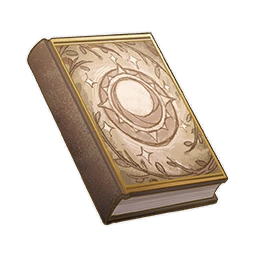

Nod-Krai · Books & Literature
Hymns of the Far North
Three volumes of Frostmoon Scion hymns, compiled by Priestess Ehrnrooth, pair older prayers with notes on rites Aila later abolished or revised. The Saarelainen hymn parallels a later Third Descender account without naming him.

A Frostmoon Scion hymnbook
Hymns of the Far North is a three-volume Nod-Krai book collection. Each volume describes the hymns as prayers passed down among the Frostmoon Scions and credits Priestess Ehrnrooth as compiler. The same description warns that most of the contents and the rites they served have fallen into disuse.
Ehrnrooth's notes are part of the source, not a neutral voice outside it. She preserves old forms, explains their ritual settings, and records where Aila—the first Moonchanter—abolished, revised, or simplified them.
The old wording and Aila's reforms
Many prayers include a description of a ceremony followed by a text from an older form and Ehrnrooth's note about its later status. For example, the older birth and funeral rites were replaced by shorter invocations, while another prayer's ritual was abolished five centuries earlier. Aila's reforms did not simply edit every hymn in the same way: some rites were ended, others simplified, and several prayers were given a new standard wording.
This paired structure lets the book preserve religious memory while showing how practice changed. A ritual described in a hymn should not automatically be presented as a custom still practiced by the Scions in the present story.
Three volumes with gaps in the sequence
Volume I opens with a proem addressed to the heirs of Hyperborea, then presents Prayer Songs I–IV and marks Prayer Song V as missing. The readable Volume II passages include Prayer Songs VI, XI, and XVI, leaving substantial gaps in the numbering. Volume III contains Prayer Songs XXI and XXII.
The collection therefore preserves a numbered tradition without presenting an unbroken set of twenty-two complete prayers. The missing and unshown portions are evidence of an incomplete surviving text; their contents should not be supplied from guesses.
Volume I: a pantheon and a warning from the editor
The first four prayers address Pitkamoonen, Lord of the Seven Calamities; Maadteraahka, Mother of Life; Tuonetar, Mother of the Underworld; and Laimelea, Mother of Time. Their associated rites concern appeasement, childbirth, funerals, and the winter solstice. One prayer connects Maadteraahka's reach from Hyperborea to Sal Vindagnyr, while another asks Laimelea to protect the imprisoned moons.
Ehrnrooth flags the Laimelea rite as inconsistent with the history recorded elsewhere in the book: the Verdant Crest appears in a rite that should predate it. She calls this a presumed scribal error but says the passage is retained for textual fidelity. The note preserves uncertainty instead of repairing it with a new explanation.
Saarelainen and the seven pieces
Prayer Song XVI tells of Saarelainen, a noble young man who seeks the daughter of Pakkaisukko. Pakkaisukko makes opening the gates of Pohjola a condition of marriage; Saarelainen understands the danger but goes to protect the daughter from punishment. The hymn says the Lord of the Seven Calamities cuts him into seven pieces. Ehrnrooth identifies this as an older prayer for healing, later simplified by Aila.
In Chapter VII, Act IV, Rhinedottir tells the Tsaritsa that the Third Descender helped open a gate to the Abyss and later agreed to have his remains divided into seven pieces in a bargain with the Heavenly Principles. The shared gate, danger to a woman, and sevenfold fate make the two accounts strongly suggestive, but their details differ: the hymn names neither the Descender nor the Tsaritsa, and the quest does not call the Third Descender Saarelainen. Their identification remains an inference, not an explicit in-game statement.
Volume III: Huurrekuutar and Kuutar
Prayer Song XXI addresses Huurrekuutar, Goddess of the Frost Moon. Ehrnrooth says the older prayer was brief because the chief protector of the ancestors and the moons' origin, past, and future were too sacred for lengthy discussion. She also preserves Aila's revised standard prayer, which uses a simpler invocation to the pale white Frost Moon.
Prayer Song XXII addresses Kuutar, the Moon Maiden, asking for mercy for those barred from Elysium. The text names Kuutar and describes the prayer as being offered in the Frost Moon's messenger's name, but leaves that messenger unnamed. Read this as a record of the collection's religious language; the hymn alone does not identify every figure with a present-day character.
Prayer, ritual record, and historical limits
The book is strongest as an annotated record of Frostmoon Scion worship: it preserves titles, prayers, ceremonies, revisions, and the compiler's own uncertainty about how some passages fit the known past. Its dated notes also show that the tradition changed over time rather than surviving as a single fixed canon.
It is not a detached chronology of northern history. The missing Prayer Song V has no addressee in the text, and the Saarelainen account is a hymn with an editorial note, not a standalone identification of the Third Descender. Keep each prayer's claims, Ehrnrooth's annotations, and later quest dialogue distinct when drawing conclusions.
This is an original CoreGG reading guide, not an official HoYoverse article or a reproduction of the game text. Source links below identify the records used so you can check the original context.
Sources & references
Check these sources for the original game text and reference trail.